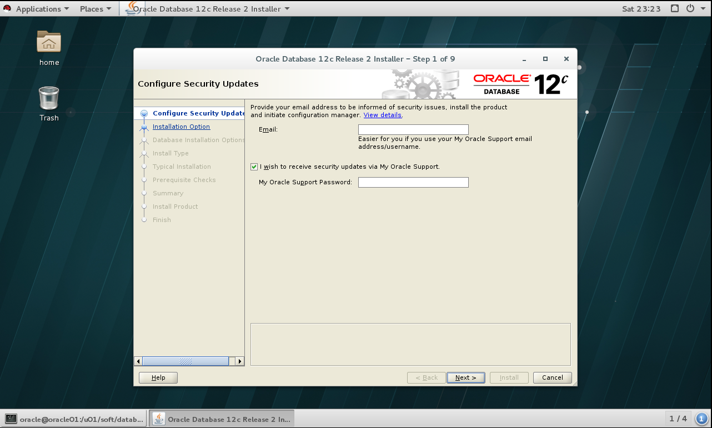
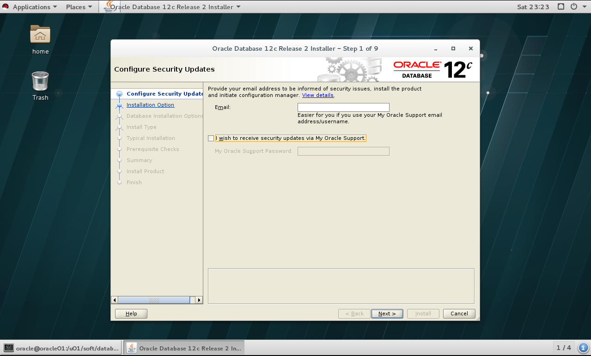
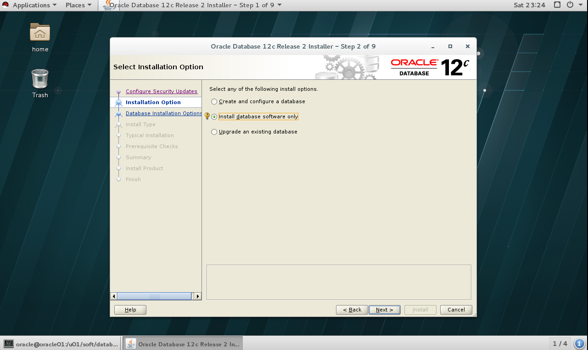
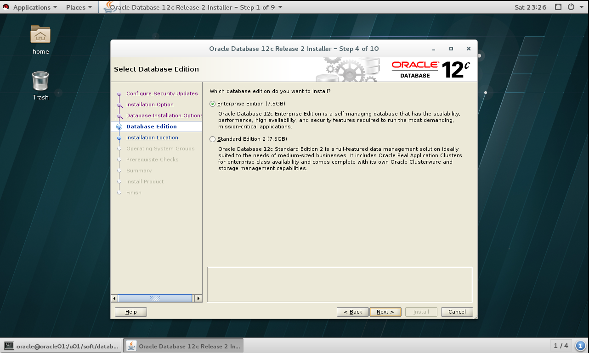
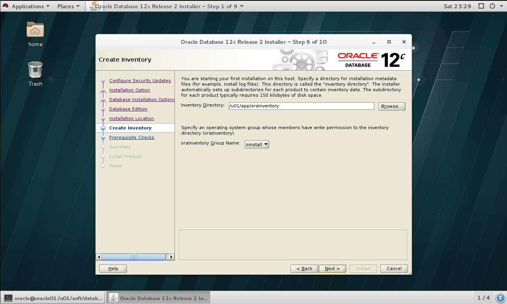
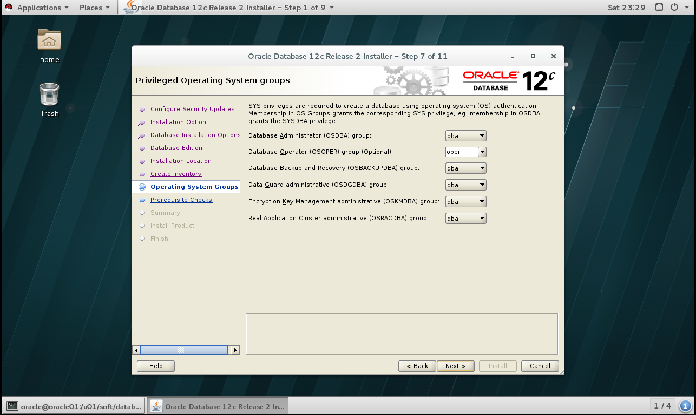
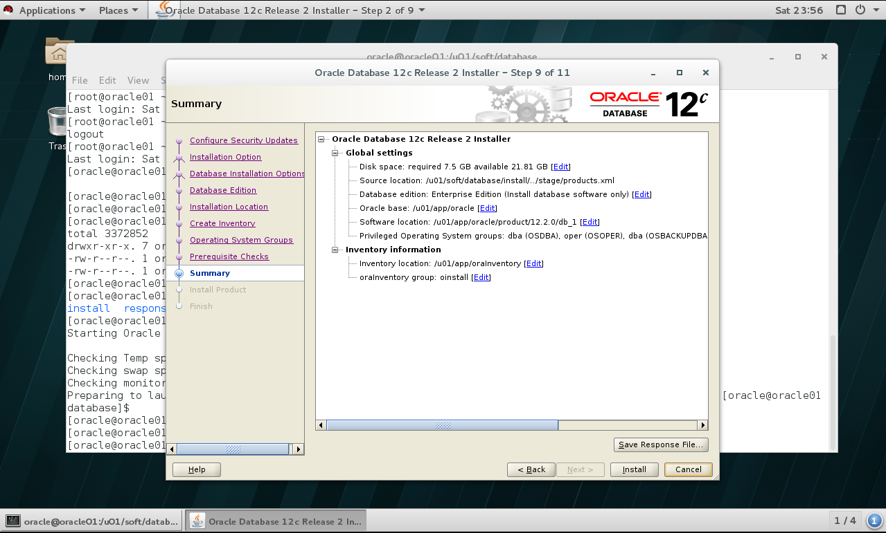
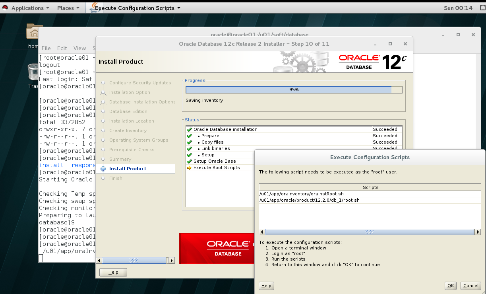
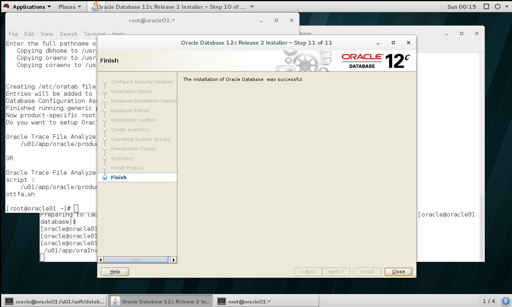

2019.09.22
[TOC]
讲义
https://oracle-base.com/articles/12c/oracle-db-12cr2-installation-on-oracle-linux-6-and-7
注意点
Vmware 12 + CentOS 7.3
提前准备的软件
[root@oracle01 u01]
total 3372852
-rw-r--r--. 1 root root 3453696911 Jul 29 2017 linuxx64_12201_database.zip
-rw-r--r--. 1 root root 98608 Sep 21 21:20 rlwrap-0.42-1.el7.x86_64.rpm
|
图像化安装
已配置vncserver的情况下
su - oracle
cd /u01/soft/database
./runInstaller
|
没有配置vncserver的情况下
yum install -y tigervnc-server tigervnc
cp /lib/systemd/system/vncserver@.service /etc/systemd/system/vncserver@:1.service
vim /etc/systemd/system/vncserver@:1.service
[Unit]
Description=Remote desktop service (VNC)
After=syslog.target network.target
[Service]
Type=forking
ExecStartPre=/bin/sh -c '/usr/bin/vncserver -kill %i > /dev/null 2>&1 || :'
ExecStart=/usr/sbin/runuser -l oracle -c "/usr/bin/vncserver %i"
PIDFile=/home/oracle/.vnc/%H%i.pid
ExecStop=/bin/sh -c '/usr/bin/vncserver -kill %i > /dev/null 2>&1 || :'
[Install]
WantedBy=multi-user.target
systemctl daemon-reload
systemctl enable vncserver@:1.service
vncserver
ps -ef|grep vnc
export DISPLAY=:1
xdpyinfo | grep name
printenv | grep DIS
xhost +
su - oracle
export DISPLAY=:1
cd /u01/soft/database
./runInstaller
|
swap分区默认分配2G需要拓展
free -h
dd if=/dev/zero of=/home/swap bs=1024 count=2048000
mkswap /home/swap
swapon /home/swap
|









